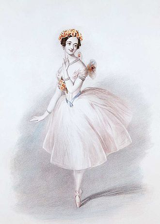
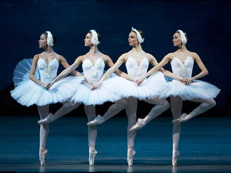
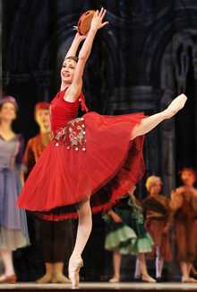
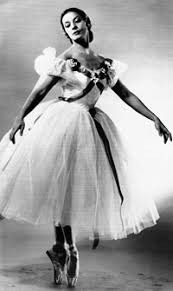
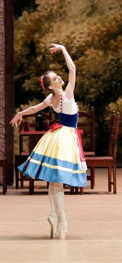

Ballet
Ballet is a musical and theatrical genre in which several types of music, dance, painting, drama and fine arts are closely intertwined, uniting them into a well-coordinated performance that unfolds before the audience on the theater stage.
Ballet considered be many to be a very beautiful because it combines grace, elegance, refinement and aesthetic perfection of movement. In dance, you can tell an entire story through every movement of the body. Even many artists, inspired by them, beautifully painted scenes of dance lessons and performances. For example, Edgar Degas. Look how beautifully he paints with his pastel on the canvas. His paintings are awesome!
Anna Pavlova
Anna Pavlova is one of the best ballerinas in the history of Russia. She managed to dance lot of ballets in her life, for example: "Dying swan", "Giselle", "Sleeping Beauty"...
She danced in many cities and countries around the world (London, New York, Paris...) When Anna came back from a tour, she always brought back various birds from there. In addition to small birds, she also had peacocks, swans and flamingos.
Point shoes
Point shoes were invented in 1830 by Maria Camargo. In the beginning there were no ballet shoes. There were only shoes or people were dancig bootlessly. Maria Taglioni was the first women that was dancing on points. She was dancing ballet La Sylphide.
La Sylphide
La Sylphide is unique in terms of the purity and clarity of its ballet style. This is a true classical ballet, which combines beautiful form with deep meaning. The main character is in love with an ideal being, a female spirit, and this love leads to a tragic outcome.
So the question arises: should we strive so hard to fulfill a dream if everything can be lost in the chase? The confrntation between the real and surreal worlds of acts I and II foreshadows Giselle that was created almostva decaded later.
The Nutcracker
The Nutcracker is very famous ballet. this ballet was staged The ballet The Nutcracker was created by Pyotr Tchaikovsky
at the request of the Imperial Theatres, based on the fairy tale The Nutcracker and the Mouse King by E. T. A. Hoffmann,
retold by Alexandre Dumas père, and the libretto by Marius Petipa.
The story follows a girl named Marie, who receives a Nutcracker doll from her godfather, Drosselmeyer.
On Christmas Eve, she finds herself in a magical land where the Nutcracker transforms into a handsome prince,
and together they defeat the Mouse King.
Giselle
Giselle a ballet about a peasant girl who falls in love with Count Albert in disguise, but upon learning of his real title and fiancée, goes mad and dies of grief.
In the second act, her ghost joins the Wilis, the vengeful spirits of girls who died before marriage. Giselle saves Albert from their fury by dancing with him one last time, and he survives, while she disappears forever.
Swan Lake ballet
The ballet Swan Lake was written by Pyotr Tchaikovsky and first staged in 1877 at the Bolshoi Theatre, but it was considered a cult classic only after Petipa and Ivanov's production in 1895.
The ballet's plot follows Prince Siegfried, who falls in love with Princess Odette, who has been enchanted into a swan by the evil sorcerer von Rothbart. Siegfried's vow of fidelity is broken when he mistakenly swears his love to the sorcerer's daughter, the black Odile.
Maya Plisetskaya
Maya Plisetskaya (1925–2015) was an outstanding Soviet and Russian ballerina, prima ballerina of the Bolshoi Theatre (1948–1990). Her life has been connected with art since childhood: she studied at the Moscow Choreographic School and was accepted into the Bolshoi Theatre troupe in 1943. Plisetskaya became famous throughout the world thanks to her roles in such ballets as Swan Lake, Carmen Suite and The Seagull. She also worked as a ballet master and choreographer, and after finishing her career, she continued to perform and engage in creative activities.
Bolchoi Theatre
The history of the Bolshoi Theatre began on March 28, 1776, when Catherine II granted Prince Pyotr Urusov the privilege of hosting public performances in Moscow,which is considered the date of its founding.The first building, called Petrovsky, was built on Petrovka Street and opened in 1780, but burned down in 1805.The current building on Theatre Square was opened in 1825 according to the design of the architect Osip Bove, but was also destroyed by fire in 1853.The theatre was restored under the direction of the architect Albert Cavos and reopened in 1856, receiving its famous sculpture of Apollo's quadriga on the pediment.
 Bolshoi Theatre
Bolshoi Theatre
Ballet tutu
The history of the ballet tutu is a journey from cumbersome ball gowns to a lightweight costume that emphasizes the grace and technique of dance. The first tutu, created in 1832 for the ballerina Marie Taglioni, was long and full, but later it began to be shortened to highlight the complexity of leg movements. In modern classical ballet, the tutu has acquired a flat and rigid shape, allowing for complex pirouettes and jumps.
Emma Livry. Flames on stage
On November 15, 1862, during a rehearsal for the opera La Muette de Portici at the Paris Opera, Emma Livry's fluffy,
lightweight tulle skirt accidentally touched the open flame of the gas lamp used to illuminate the stage.
The costume instantly burst into flame.
Livry's fluffy, lightweight, and fire-retardant-free ballet costume (tunic) accidentally touched an open gas lamp,
which was used to illuminate the stage in that era.The ballerina's tutu, fluffy, lightweight, and not flame-retardant (as this would make the fabric stiff and dull,
something ballerinas aAlthough by that time there was already an imperial decree (from 1859) requiring theatrical costumes to be treated with a fire-retardant compound (alum), many ballerinas,
including Livry, refused this procedure.Voided for aesthetic reasons), touched the open flame of the gas jet used to light the stage.
The treatment made the fabric dull, stiff, and heavy, which, in their opinion, negatively impacted the aesthetics and quality of the dance.
Livry insisted on dancing in a regular, snow-white, airy costume, taking responsibility for it herself.
The flames instantly engulfed the ballerina. Despite attempts to extinguish the fire including wituffered severe burns to her back, arms, and legs.
Emma Livry did not die immediately. She suffered for several months, enduring numerous operations. She finally died on July 26, 1863,
in Neuilly-sur-Seine of sepsis (blood poisoning) caused by unhealed wounds and complications from burns.
This tragedy became one of the most famous and tragic examples of the dangerous theatre conditions of the time and led to stricter fire safety regulations in theatres,
making the use of fire-resistant materials for costumes mandatory.
Galina Ulanova
Galina Ulanova (1910-1998) was an outstanding Soviet ballerina, prima ballerina of the Leningrad and Bolshoi theaters, and twice Hero of Socialist Labor. Born into a family of ballet dancers, she began her professional career in 1928 in Leningrad, then moved to the Bolshoi Theatre in 1944, where she performed until 1960.Her career ended, but she continued to work as a teacher and coach and is known for her "soulful flight" in the roles of Odette, Juliet and Giselle.
Sleeping Beauty
The libretto was based on Charles Perrault's fairy tale about Princess Aurora, who was cursed by the evil fairy Carabosse. The curse stated that at the age of sixteen, she would prick herself on a spindle and die. The good Lilac Fairy softened the curse: Aurora would sleep for a hundred years until she was awakened by a prince's kiss.
Commissioned by the director of the Imperial Theatres, Ivan Vsevolozhsky, Pyotr Tchaikovsky wrote the music for this fairytale performance.The outstanding choreographer Marius Petipa created choreography that is considered the standard of classical ballet. The outstanding choreographer Marius Petipa created choreography that is considered the standard of classical ballet.
The ballet premiered on January 3, 1890, at the Mariinsky Theatre in St. Petersburg. The first performer of the role of Aurora was the ballerina Carlotta Brianza. The ballet "The Sleeping Beauty" became a significant phenomenon in the history of world ballet, and its premiere marked a new stage in the development of Russian dance art.

Don Quixote
In 1869, the French choreographer Marius Petipa, inspired by Cervantes' novel, staged a ballet in Moscow for the renowned artist Anna Sobeshanskaya. Composer Ludwig Minkus wrote the music for the ballet. The main plot revolves around the love of Kitri and Basilio, with Don Quixote appearing as a secondary character who sees Kitri as his beautiful Dulcinea. The ballet was first performed at the Bolshoi Theatre in Moscow in December 1869. In 1871, Petipa reworked the production for the St. Petersburg stage. In 1900, Alexander Gorsky presented his version of the ballet. He altered the mise-en-scène, enlivened the corps de ballet, and modernized the production, preserving its national flavor and dance technique but making it lighter and more festive than Petipa's. Almost all modern productions of Don Quixote use Gorsky's new version, while retaining Minkus's original music.
Brief story:In Barcelona, the innkeeper Lorenzo wants to marry his daughter Kitri to the wealthy but unloved Gamache. Kitri is in love with the poor barber Basilio, who is in love with her in return. Don Quixote, captivated by chivalric romances, sees Kitri as his imaginary love interest, Dulcinea. In one scene, Basilio fakes suicide to force Lorenzo to bless his marriage to Kitri. Kitri pleads with her father, who relents, but Basilio, to everyone's surprise, quickly "resurrects." The ballet ends with Kitri and Basilio happily married, and Don Quixote and Sancho Panza set off in search of new adventures.

Stanislavsky Theatre
The theatre traces its history back to 1918, when Konstantin Stanislavsky founded the Bolshoi Theatre Opera Studio.In 1941, the Stanislavsky Opera Theatre and the Music Studio under the direction of Vladimir Nemirovich-Danchenko merged into a single theatre.The theatre focuses on opera and ballet productions, combining the principles of dramatic theatre developed by Stanislavsky with musical art.Today, it is one of Russia's leading musical theatres, renowned for its innovative productions and high-tech stage following a major renovation.
Esmeralda
The ballet "Esmeralda" tells the story of the tragic love of the Parisian dancer Esmeralda for the officer Phoebus. She is also coveted by the archdeacon Claude Frollo, who pursues her, and the hunchbacked bell-ringer Quasimodo. The plot involves their attempts to win her attention, secret meetings, and a dramatic denouement. Esmeralda meets Phoebus, with whom she falls in love. She receives a scarf from him as a gift, which makes his fiancée, Fleur-de-Lys, jealous.Archdeacon Claude Frollo is in love with Esmeralda, but she rejects him.
In a fit of jealousy, he attacks Phoebus and stabs him with a dagger, and Esmeralda is blamed for the crime.Esmeralda ends up imprisoned, but she is rescued by Quasimodo, who takes her to Notre Dame Cathedral, where, by law, she cannot be touched.Warm feelings, based on care and friendship, develop between Esmeralda and Quasimodo. However, when she sees Phoebus coming to her, she naively calls out to him. This leads to her being handed over to the authorities and sentenced to death.As Esmeralda is led to her execution, Quasimodo kills Frollo, who was also present at the execution. In the finale, according to various versions, either Phoebus or Quasimodo die after Esmeralda, or Quasimodo dies of grief next to her, leading to a tragic denouement.
Alicia Alonso
(1920-2019)Born in Cuba, she began dancing as a child and moved to the United States to study.At 19, she began to lose her sight due to retinal detachment, but continued to dance, developing a unique technique based on music and internal sensations.She performed with the Russian Ballet in Monte Carlo, at the Bolshoi and Kirov Theatres, winning worldwide fame.She returned to Cuba and made her own troupe, which became the basis of the national ballet.After the Cuban Revolution, its activities received state support, and ballet became part of the country's cultural policy.She continued to dance into her 70s, and at 75 she performed “Butterfly,” remaining the theater’s director and teacher until she was 99, even though she was almost blind.She created numerous choreographic productions, trained generations of dancers and received numerous awards, including a UNESCO medal and the title of Hero of Labor of Cuba.Her life is an example of fighting physical limitations for the sake of art.Even when she was blind, she still continued to dance.
Coppélia
Plot:Villagers notice a beautiful girl, Coppélia, sitting in the window of the old doll maker Coppélius's house, reading, but she doesn't respond. Swanilda, Franz's fiancée, is jealous of his mysterious beauty. Franz flirts with Coppélia, which leads to a quarrel with Swanilda.That night, when Coppélius leaves, Swanilda and her friends sneak into the master's house. Inside, they discover numerous automatons (dolls), and Swanilda, dressed in Coppélius's dress, impersonates the doll to teach Franz a lesson.Coppélius "brings to life" his doll Coppélia, tricking Franz into believing she's alive and dancing. Just as Franz is about to marry the "doll," Swanhilda tears off her wig, and Franz, realizing the deception, begs for forgiveness. Coppélius intervenes and reconciles the lovers, and in the finale, the engagement is celebrated at a village festival.The plot is based on the short story "The Sandman" by E. T. A. Hoffmann, but the ballet's librettists (Charles Nuiter and Arthur Saint-Léon) softened the mystical motifs, turning the story into a light comedy.
Rudolf Nureyev
(1938-1993)The legendary Soviet and world ballet dancer, born on a train near Irkutsk, began his career at the Kirov Theatre (Mariinsky) in Leningrad, but in 1961 fled to the USSR, which caused a scandal,and became a star of Western ballet, dancing with Margot Fonteyn and heading the Paris Opera Ballet, famous for his virtuoso technique, expression and contribution to choreography.and became a star of Western ballet, dancing with Margot Fonteyn and heading the Paris Opera Ballet, famous for his virtuoso technique, expression and contribution to choreography. He staged his own versions of classical ballets (Swan Lake, Giselle, La Bayadère).From 1983 to 1989, he was director of the Paris Opera Ballet. Illness: In 1983, he was diagnosed with HIV. He continued to work, but towards the end of his life, he switched to conducting. He died on January 6, 1993 in Paris and was buried in the Russian cemetery of Sainte-Geneviève-des-Bois.